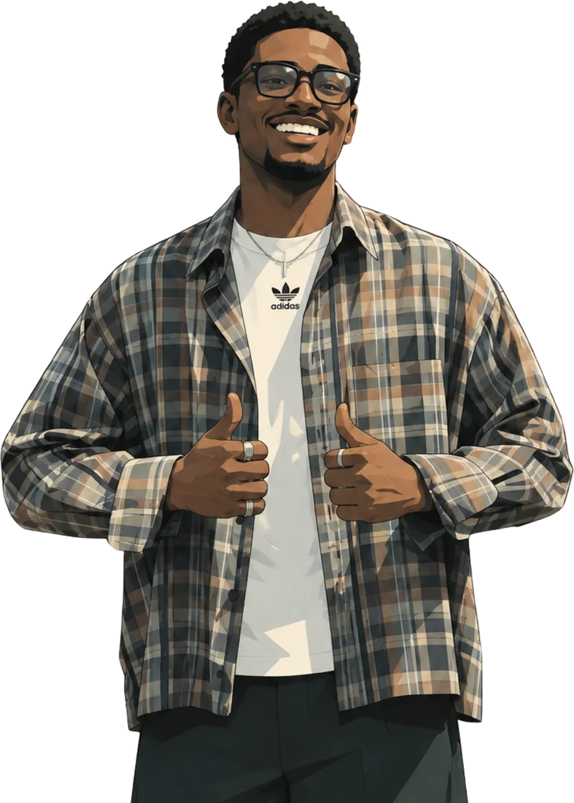

Video editor & motion graphics.
I cut footage into stories that hold attention, from short-form reels to long YouTube edits, and animate the motion graphics that lift them. I also design thumbnails and social graphics.

Selected work
A selection of recent work across short-form, long-form and motion graphics. Select a project to watch it.
Long-form
Before and after: the raw footage next to the final editShort-form
Vertical reels, shorts and motion graphicsGraphics
Thumbnails and brand extrasEdits with
a clear point of view.
I'm a video editor and motion graphics artist, with graphic design as an added skill. I shape raw footage into clean, well-paced stories and add the animation that makes them look finished.
I don't just cut footage. Every clip has to earn its place on the timeline, and every edit has to tell a story.
Adobe Premiere Pro
Editing, pacing, sound and delivery.
Adobe After Effects
Motion graphics, titles and animation.
DaVinci Resolve
Colour grading and finishing.
Canva
Thumbnails, social graphics and brand kits.
What I do
Pick one service or book the full package.
Video editing
Short-form reels and YouTube videos, cut for pace and retention.
- Rough cut to final export
- Hooks, pacing and transitions
- Vertical, square and wide versions
Motion graphics
Animated titles, lower thirds and transitions that make an edit feel finished.
- Animated titles and lower thirds
- Kinetic text and transitions
- Logo stings and short explainers
Colour grading
Consistent, cinematic looks and clean skin tones across every shot.
- Shot matching and correction
- Looks and skin-tone care
- Delivery-ready colour
Graphic design
Thumbnails, social posts and brand kits to go with your videos.
- Thumbnails and covers
- Social posts and brand kits
- Graphics that match your edits
Let's cut something good.
Tell me about your project, format and deadline. I reply within one day.
madufaithful1@gmail.com